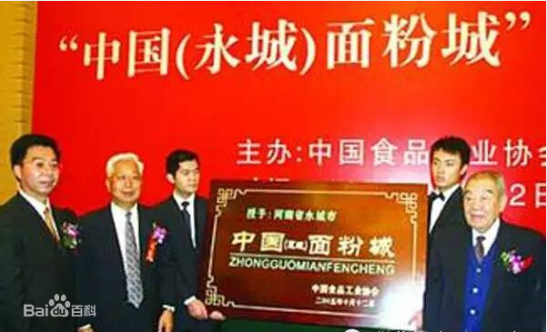

永城介绍
永城特产

永城市，居于豫东之地，位于豫皖苏鲁四省交界处。永城特产，以独有的特色被广受喜爱，热销全国各地，甚至远销港澳台地区、日本、东南亚国家及全球地区。永城特产主要有：永城面粉、永城辣椒、永城枣干、永城酥梨、皇沟御酒、任湖狗肉、裴桥西瓜、永城红薯粉条、毛家传统卤菜、永城无烟煤、芒砀山泥响。
永城市是全国最大的面粉加工基地，是中国食品工业协会认定的全国唯一的“中国面粉城”。但在面粉产业发展之初，由于不重视品牌建设，永城面粉企业曾一度陷入困境。永城市工商部门在开展兴企强市、兴农富民“两大工程”活动中，把帮扶面粉企业做大做强作为工作重点，积极引导企业大力实施品牌战略，取得了明显成效，有力地促进了永城面粉业的发展。起步于上世纪80年代中期的永城面粉业，虽然没有一个自己的牌子，但凭借质优价廉，产品依然占领了国内市场。但是，随着消费者质量意识和品牌意识的增强，这种情况发生了明显变化，原来畅销的产品开始出现滞销。到2000年左右，企业加工1公斤面粉只能获得2厘钱的利润，一些小规模的面粉加工企业纷纷倒闭。有的企业用了几年甚至十几年的品牌不知道注册，结果被他人抢注。针对这些情况，永城市工商部门从普及商标知识入手，举办商标知识讲座，引导面粉加工企业注册商标。质量过硬的面粉有了商标这个金字招牌后，不仅迅速打开了销路，产品供不应求，而且售价也随之提高了。永城面粉近20个品牌中已涌现出宇花、鹤都、远征、康汇，4个河南省著名商标。
永城辣椒始于明末清初，这里的传统主栽品种有：大羊角椒、小羊角椒、大线椒、小线椒、铜皮椒、大菜椒和改良椒等。具有椒长个大，肥胖紫红，肉厚油多，香辣味美，可口开胃等特点。在国际市场上被称为“永椒”。 据科学测定，它除含辣椒素外，还含有龙葵甙、脂肪油、维生素C及挥发油。特别是维生素C在蔬菜中占居首位。不但对维持人体生理平衡有重要作用，又有抑制癌病的功效。除鲜食、腌制外，还可加工成辣椒酱、辣椒油供人们佐食。所以，它是一种很好的辛辣蔬菜和调味佳品。
相传，汉末医学家华佗曾路过永城，对红艳艳的永城辣椒很感兴趣，他特意住了几天，对可爱的椒果专门进行研究，发现这种辣椒不仅是上等的调味蔬菜，而且还有消化和胃、行血健脾之功效。他赞不绝口地说：“好椒！好椒！”自此以后，永城成为驰名全国的“永椒之乡”。永城辣椒种植历史悠久，以永城酂城、龙岗所产辣椒最佳。以永城辣椒为辣椒为原料加工而成的辣椒油、辣椒砖等制品畅销京、沪、穗等城市，并远销于香港、澳门、日本、美国、印尼、新加坡、马来西亚、缅甸等10多个国家地区。